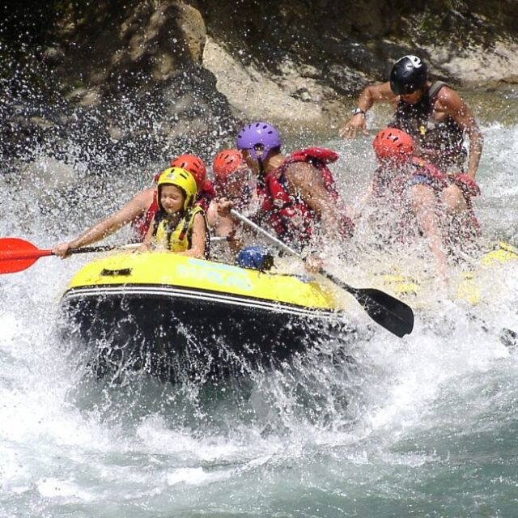
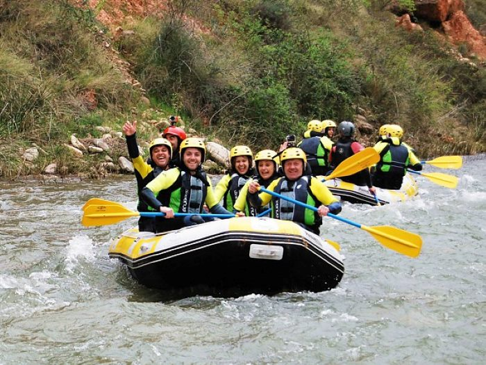
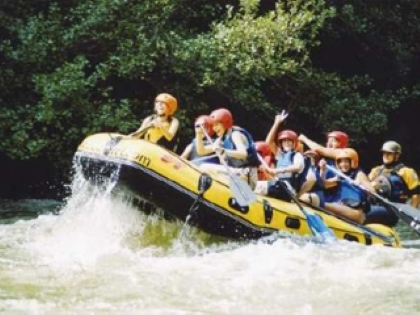
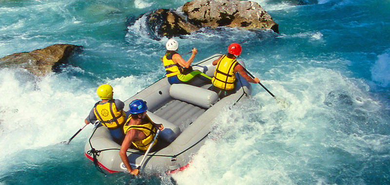
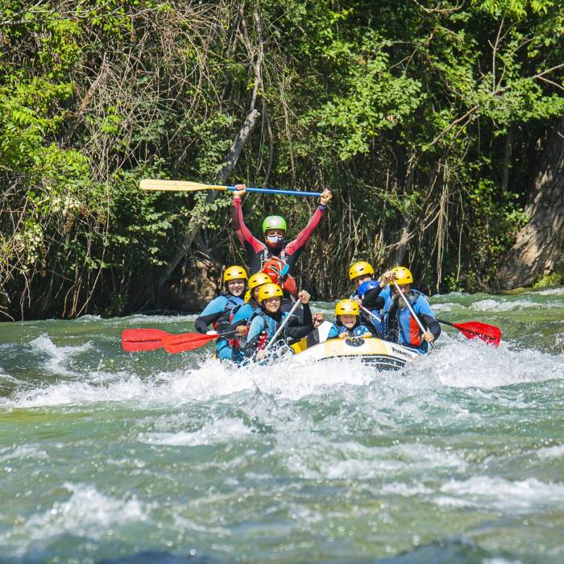
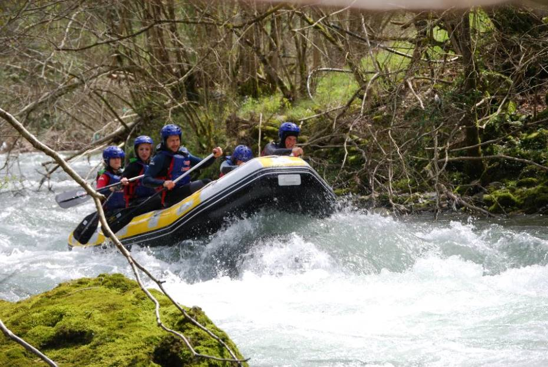
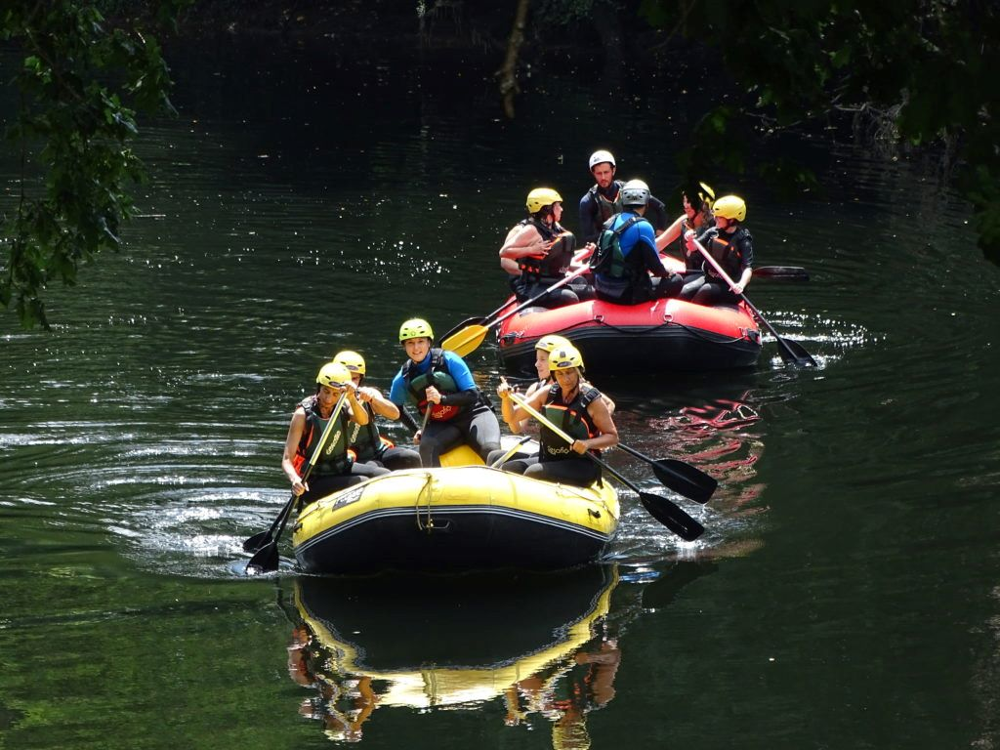

Splashy Fun for Everyone 7+ years Crowd-Pleasing Whitewater | Class III+ 1 hour east of Sacramento Available April - October

Adventure-Seekers 12+ years Exciting Lively Whitewater | Class III-IV 1 hour east of Sacramento Available May - September

Adventure-Seekers 12+ years Fast-Paced Intricate Whitewater | Class IV+ 1 hour from Yosemite Valley Available April - Labor Day

Very Adventurous Thrill-Seekers 17+ Most Challenging Whitewater | Class V Combine with the Tuolumne for the ultimate 27-mile adventure 1 hour from Yosemite Valley Typically Available June - Labor Day

Adventurous Go-Getters 15+ years Fast-Paced Intricate Whitewater | Class IV+ Within 2 hrs from the San Francisco Bay Area Available in October

Special Trip for Little Paddlers Ages 5+ Kid-Friendly Float & Play | Class I-II 1 hour east of Sacramento Available June - October

Adventure-Seekers 12+ years Exciting Lively Whitewater | Class III-IV 1 hour from Yosemite Valley Available Spring Only

Adventurous Go-Getters 15+ years Fast-Paced Intricate Whitewater | Class IV+ 1 hour east of Sacramento Available Spring Only

Adventurous Go-Getters 15+ years Fast-Paced Intricate Whitewater | Class IV+ Within 3 hrs from the San Francisco Bay Area Available Spring Only
Rafting
Tubing
Cruises
Other Activities
Accommodation
Offers
Travel Guide
About
Rates
Contact